Hands-on Setup: Deploying Automation Portal - Prerequisites and Configuration
In this lab, you’ll walk through the essential prerequisite steps to deploy the Ansible Automation Portal on OpenShift Container Platform. We’ll configure OAuth authentication with AAP, generate required API tokens, and prepare your OpenShift environment for the portal deployment and in addition to that github configuration to do the setup for the Execution Environments builder Ci/CD configuration to directly push the changes to the Private automation hub. These steps ensure secure communication between the automation portal and your AAP instance.
This is the foundational work that must be completed before you deploy the Helm chart. Think of it as setting up the "communication channels" between the portal and your AAP instance.
Task 1: Create an OAuth Application in Ansible Automation Platform
The OAuth application is how the Automation Portal will authenticate users against your AAP instance. Think of it as registering the portal as a "trusted application" within AAP.
Step 1.1: Log in to AAP
-
From the RHDP login page access the Ansible Automation Platform.
-
Select the project as aap and open your Ansible Automation Platform instance in a web browser.
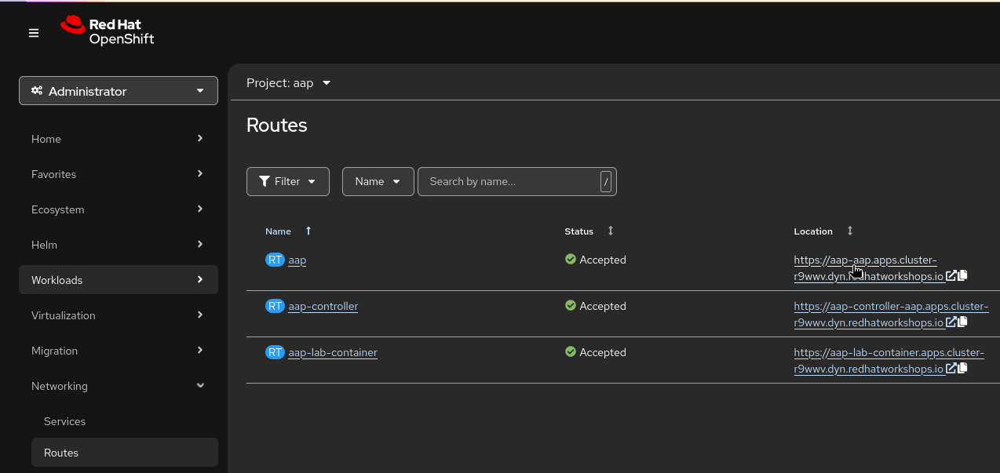
-
Go to
Workload → Secrets → aap-admin-passwordand use theadministratorcredentials provided to you.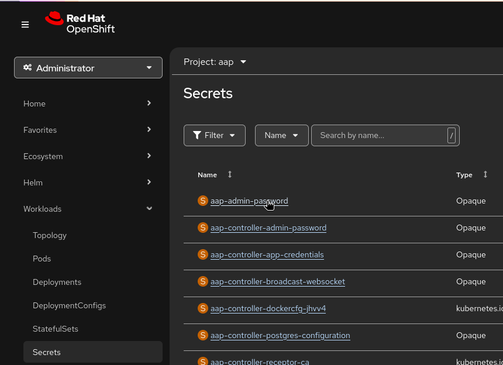
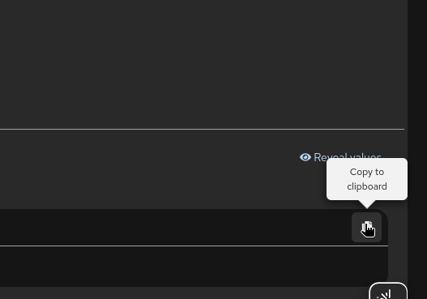
Open your Ansible Automation Platform instance in a web browser using RHDP login page and log in with the administrator credentials provided to you.
Step 1.2: Navigate to OAuth Applications
Once logged in:
-
In the left sidebar, click Access Management
-
Select OAuth Applications from the submenu
-
Click the Create OAuth Application button in the upper right corner
Step 1.3: Configure the OAuth Application
Fill in the following fields with these exact values:
-
Name:
automation-portal -
Organization: Select the organization where your automation content lives (typically "Default" unless you have a multi-tenant setup)
-
Authorization grant type: Select Authorization code
-
Client type: Select Confidential
-
Redirect URIs: Enter a placeholder URL for now:
https://portal.example.com/api/auth/rhaap/handler/frame(we’ll update this later with the actual portal deployment URL)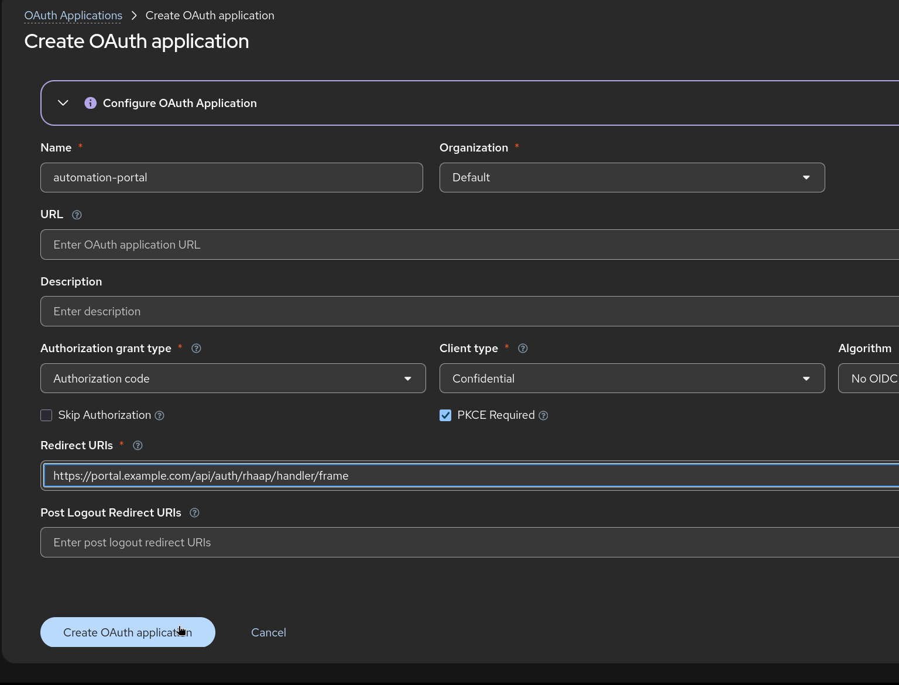
|
The Redirect URI is temporarily set to a placeholder because the actual portal URL won’t exist until after you deploy the Helm chart. We’ll come back and update this with the real deployment URL in a later step. |
Step 1.4: Save and Capture Credentials
Click the Create OAuth Application button.
Once created, the system will display:
-
Client ID — copy this value and save it in a secure location (notepad, password manager, etc.)
-
Client Secret — this appears only once; copy and save it immediately
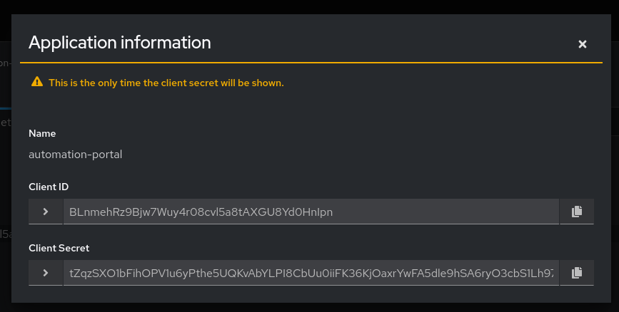
|
IMPORTANT: The Client Secret will never be displayed again. If you lose it, you’ll need to regenerate it. Save both values now before navigating away. |
Task 2: Enable OAuth Token Creation for External Users
The Below steps will be only needed if you are using an external identity provider (LDAP, SAML, OAuth, etc.) for user authentication. If your users are logging in directly with AAP credentials, you can skip this step for this lab.
-
In the AAP left sidebar, click Settings
-
Select Platform gateway from the submenu
-
Look for the setting: Allow external users to create OAuth2 tokens
If the setting is not already enabled:
-
Click Edit platform gateway settings
-
Toggle Allow external users to create OAuth2 tokens to Enabled
-
Click Save platform gateway settings
Verify that the setting now shows as Enabled on the Platform gateway settings page.
Task 3: Generate an API Token for the Automation Portal
The API token is used by the Automation Portal to communicate with your AAP instance on a service-to-service basis. This token is what allows the portal to synchronize job templates, manage execution environments, and perform automation tasks.
-
Go to the Access Management → API Tokens and
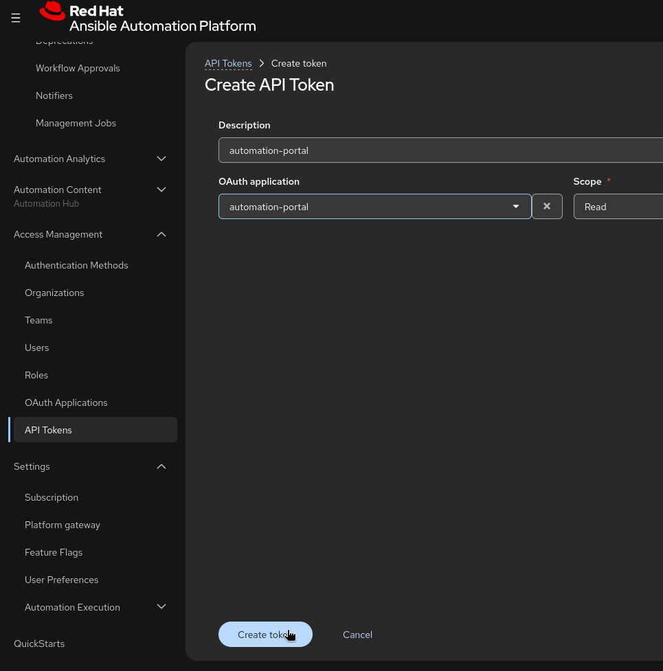
Fill in the following fields:
-
Description:
automation-portal(descriptive name for your reference) -
Application: Select the automation-portal OAuth application you created in Task 1
-
Scope: Select read (the portal needs read access to manage templates and execution environments)
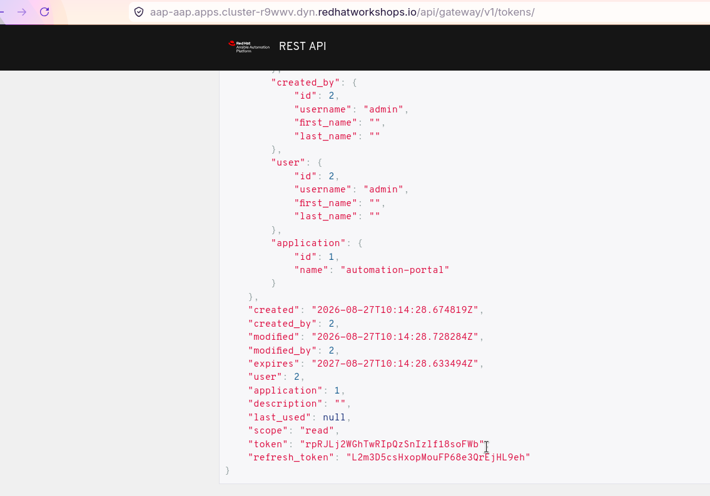
Generate and Save the Token and as the system will display the generated token — copy it immediately and save it in a secure location alongside your Client ID and Client Secret from Task 1.
IMPORTANT: Like the Client Secret, the API token is displayed only once. If you navigate away, you cannot retrieve it again without creating a new token.
-
Make a note of the three values you now have:
-
Client ID:
_ -
Client Secret:
_ -
API Token:
_
These three values are critical for the next phase of setup.
Task 4: Authenticate with Your OpenShift Cluster
Now we shift focus to the OpenShift side of the setup. We need to connect to your OCP cluster using the CLI tool, which will be the gateway for creating the portal’s project and secrets.
-
Login to the bastion host using the credentials from the RHDP login page.
-
Once login to bastion host then login to OCP cli using the command shared in OpenShift CLI Commands section on the RHDP login page:
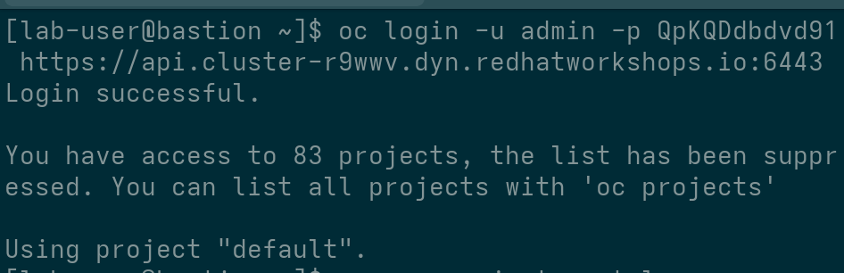
-
Run the following command, replacing
portalwith your preferred project name if you want a different project name(keep it lowercase with hyphens only, no underscores):oc new-project portal -
Make sure your CLI context is set to the newly created project:
oc project portal -
Build and Deploy the Plugin Registry
-
Go to the Installer link and Get the installer link for Ansible automation portal Setup Bundle.
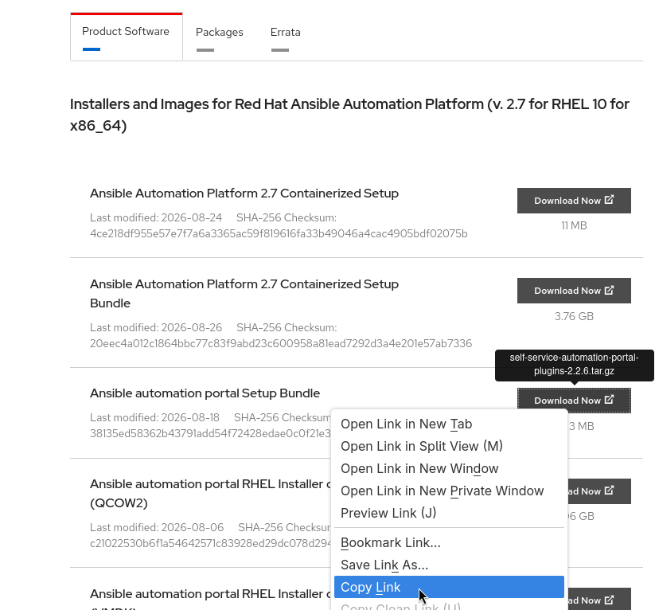
-
Download the installer file to the VM:
wget -O automation.tar.gz "<paste-link-here taken from above 5>" -
Extract the automation.tar.gz file using the following command:
tar -xvf automation.tar.gz-
Run the following commands to create the
plugin-registrybinary build, build the image using the dynamic plugin directory, and deploy the resulting image:Where
$DYNAMIC_PLUGIN_ROOT_DIRis the local directory containing the dynamic plugin files.export DYNAMIC_PLUGIN_ROOT_DIR=/home/lab-useroc new-build httpd --name=plugin-registry --binaryoc start-build plugin-registry --from-dir=$DYNAMIC_PLUGIN_ROOT_DIR --waitoc new-app --image-stream=plugin-registry
-
Currently, we are using Helm chart to deploy the Automation Portal. In future, we will be using Operator to deploy the Automation Portal once its will be GA. Currently its in in Tech Preview.
Create a Github Token (PAT) and Oauth Application for pushing the Execution Environment (EE) to Github.
-
The Github Token (PAT) is needed to use the Content Discovery feature of the Automation Portal.
-
We are going to setup the Github OAuth Application to push the Execution Environment (EE) content to your GitHub repository and then with Github Actions we will build the EE and push it to the Red Hat registry. So for this you need to use your personal Github Account.
Step 1: Generate a GitHub Personal Access Token (PAT)
-
Go to your GitHub Settings > Developer Settings > Personal Access Tokens.
-
Click Generate new token (classic).
-
Give it a descriptive note (e.g., AAP-Content-Discovery) and Create a GitHub PAT with the following scopes:
repo admin (this can be only read:*org*) workflow (required for the CI activity tab to display workflow run status)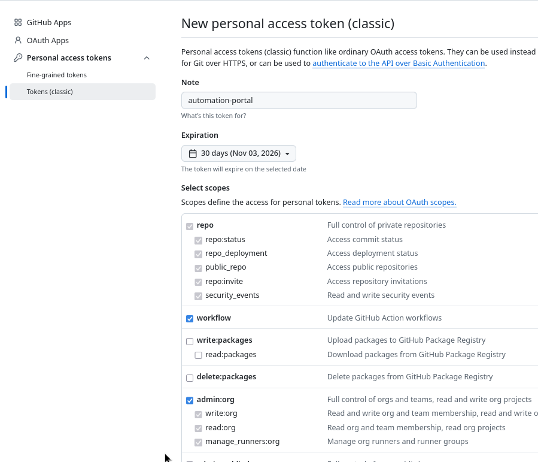
-
Click Generate Token and immediately copy the token value as it will be used in the next section for creating secrets in the Automation Portal.
Step 2: Create an OAuth apps in GitHub for the EE Builder.
To configure GitHub OAuth for the automation portal, complete the following steps.
-
Create a GitHub OAuth App in your organization settings under Developer settings > OAuth Apps.
Enter the following details:
-
Application name: A descriptive name, for example
ansible-portal-ee-builder. -
Homepage URL: The URL of your automation portal deployment.
https://automation-portal -
Authorization callback URL:
https://automation-portal/api/auth/github/handler/frame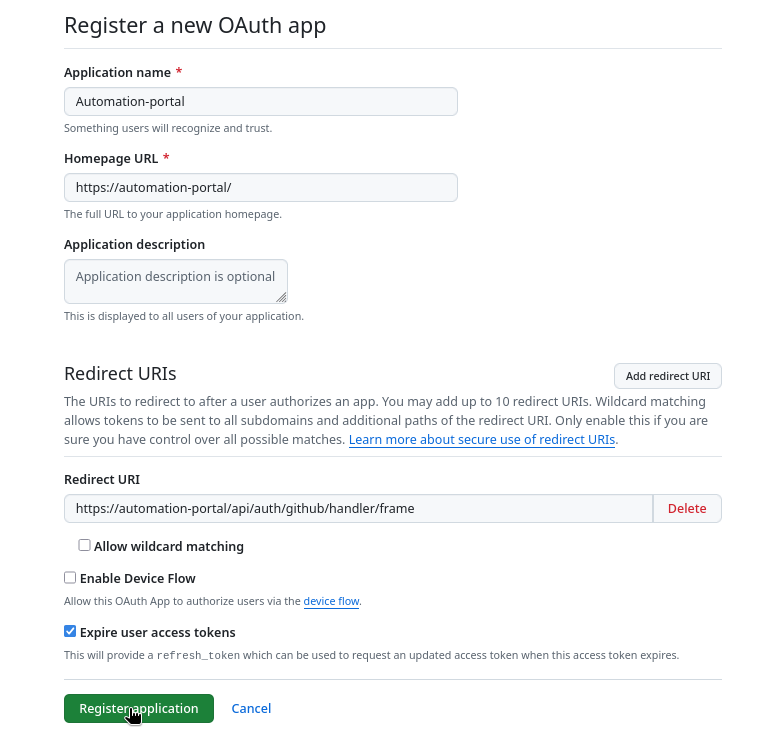
GitHub limits the Authorization callback URL to 100 characters and also we will replace the placeholder
automation-portalwith the actual hostname After portal deployment. If your OpenShift route URL exceeds this limit, configure a shorter route hostname for the portal before creating the OAuth App.If your OpenShift route URL exceeds this limit, configure a shorter route hostname for the portal before creating the OAuth App.
-
-
Note the Client ID and generate a Client secret.
Save the client secret value immediately because you cannot view it again.
-
If your organization restricts OAuth App access, navigate to Organization settings > Third-party access and approve the OAuth App.
-
we will Enable the GitHub authentication provider in your configuration in the next steps.
Step 3: Create a repo:
In your GitHub organization which we will be integrating in the next chapter please store the Execution Environment (EE) content. This repository will be used by the Automation Portal to push and manage EE content.
-
I have created automation-portal you can create your own repo in your GitHub organization to store the Execution Environment (EE) content. This repository will be used by the Automation Portal to push and manage EE content.
-
Go to settings of the repository and then go to secrets and variables and then click on actions and then click on new repository secret.
# For Variables REDHAT_REGISTRY_USERNAME: <YOUR-rhn_iD-USERNAME> REGISTRY_USERNAME : admin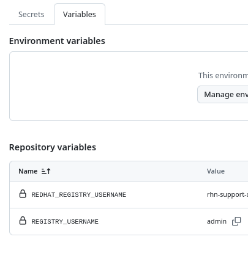
# For Secrets REDHAT_REGISTRY_PASSWORD: <YOUR-rhn_iD-PASSWORD> REGISTRY_PASSWORD : <RHDP-AAP-Admin-Password>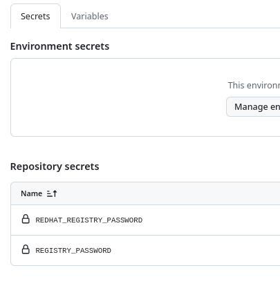
Create OpenShift Secrets for AAP Authentication
OpenShift Secrets are secure, encrypted storage for sensitive data. We’ll create a secret that holds the OAuth credentials and API token you generated in Tasks 1 and 3. The Automation Portal Helm chart will reference this secret during deployment.
-
Go to Workloads > Secrets in the OpenShift console and make sure the project
portalis selected. You should create the secretsecrets-rhaap-portalwith the below information. You can also create the secret using theoccommand line tool.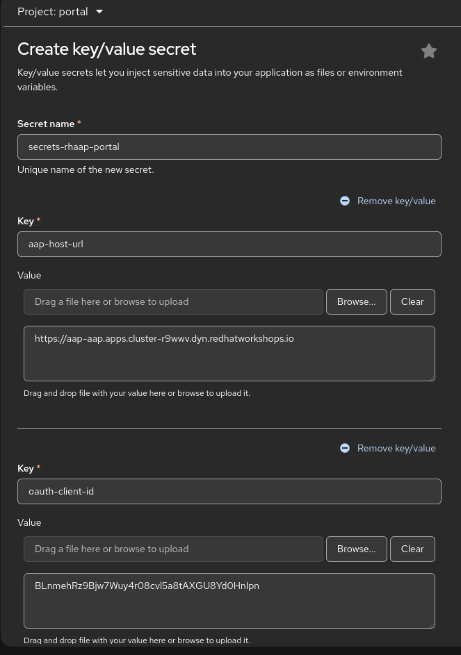
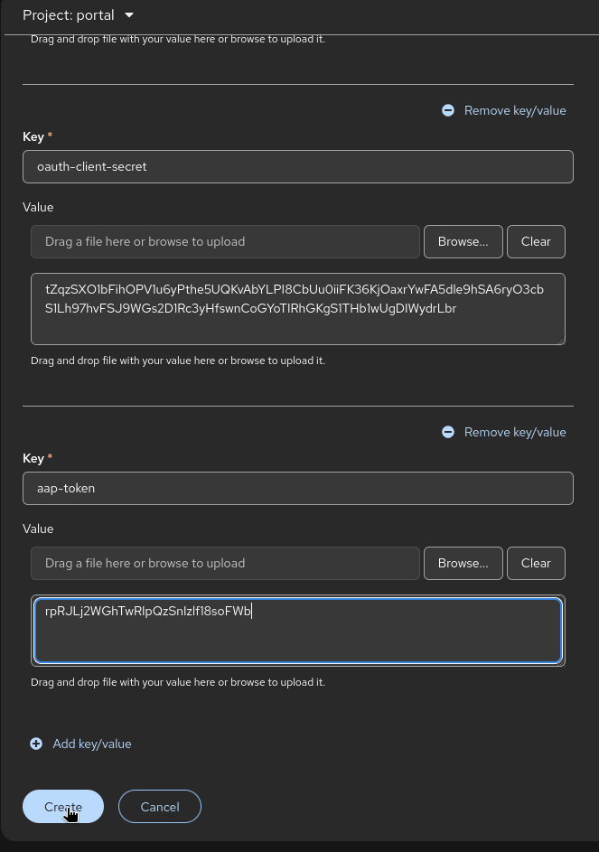
OR
You can also run the secret creation command, gather the values from Tasks 1 and 3:
-
<aap-instance-url>— The URL of your AAP instance (e.g.,https://{aap_controller_web_url}) -
<oauth-client-id>— The Client ID from the previous task. -
<oauth-client-secret>— The Client Secret from the previous task. -
<aap-token>— The API Token from the previous task.-
Run the following command, replacing the placeholders with your actual values:
oc create secret generic secrets-rhaap-portal \ --from-literal=aap-host-url="<your-aap-url>" \ --from-literal=oauth-client-id="your-client-id-here" \ --from-literal=oauth-client-secret="your-client-secret-here" \ --from-literal=aap-token="your-api-token-here" \ -n portal
-
|
The secret name ( |
-
Create a secret for GitHub OAuth and Personal Access Token (PAT) in the same way, using the values from Task 4. This secret will be used by the Automation Portal to authenticate with GitHub for pushing Execution Environment content.
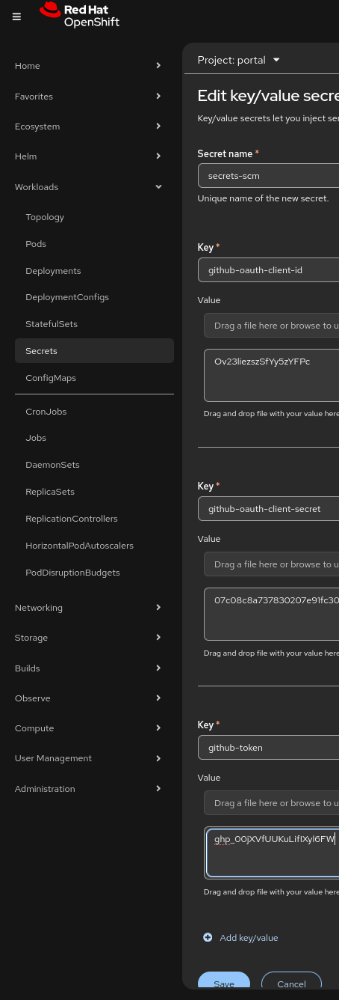
Once the above is done. You’re now ready for the next phase: deploying the Automation Portal via Helm chart!